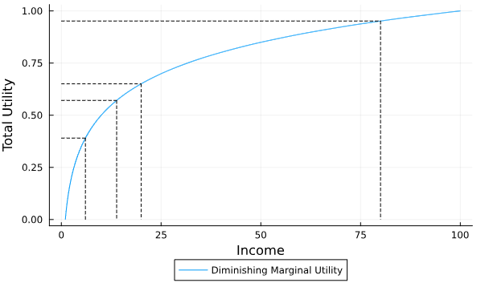

R
New Zealand Crime
Something that keeps coming up is the amount of crime around Wellington. People claim that crime increased in the city.
I decided to take a look at reported crime in Wellington, based on Police NZ data. It is important to interpret these cautiously: these figures reflect only reported crimes. The true level of crime is likely higher, and some types of crime are more likely to go unreported than others.
I include Auckland City crime for comparison (below).
See code
Monetary policy

I wanted to track how the Reserve Bank of New Zealand (RBNZ) changes their future expectations for their main interest rate, the Official Cash Rate.
The graph (above) shows the RBNZ's forecasted OCR in each Monetary Policy Statement since the end of 2023.
See code
Urban economics
In my research, I needed to know how many new residential houses have been built over 2013-2019.
The graph above shows the suburbs in Wellington City that had the most housing consents.
See code
Julia
A graphical representation of the different approaches to the ability-to-pay tax.
Equal absolute sacrefice
Equal proportional sacrefice
See code